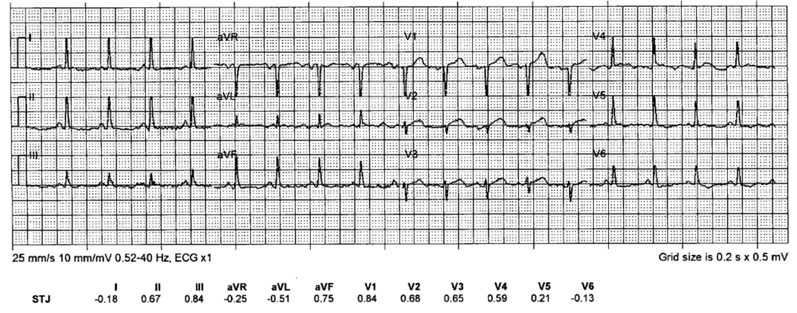
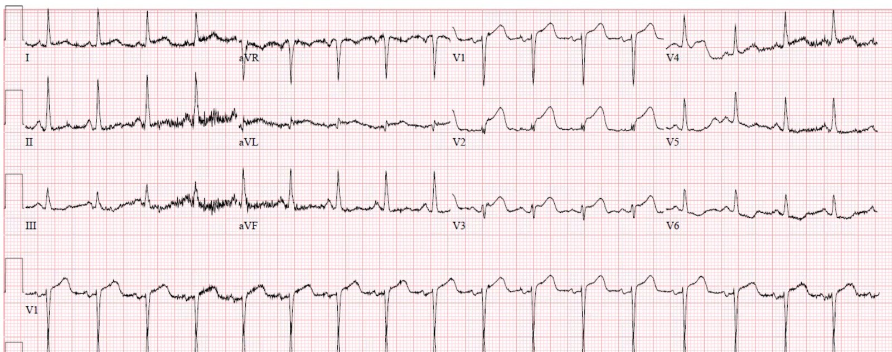
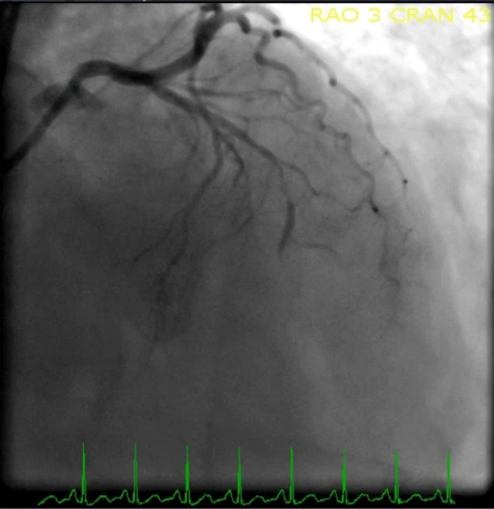
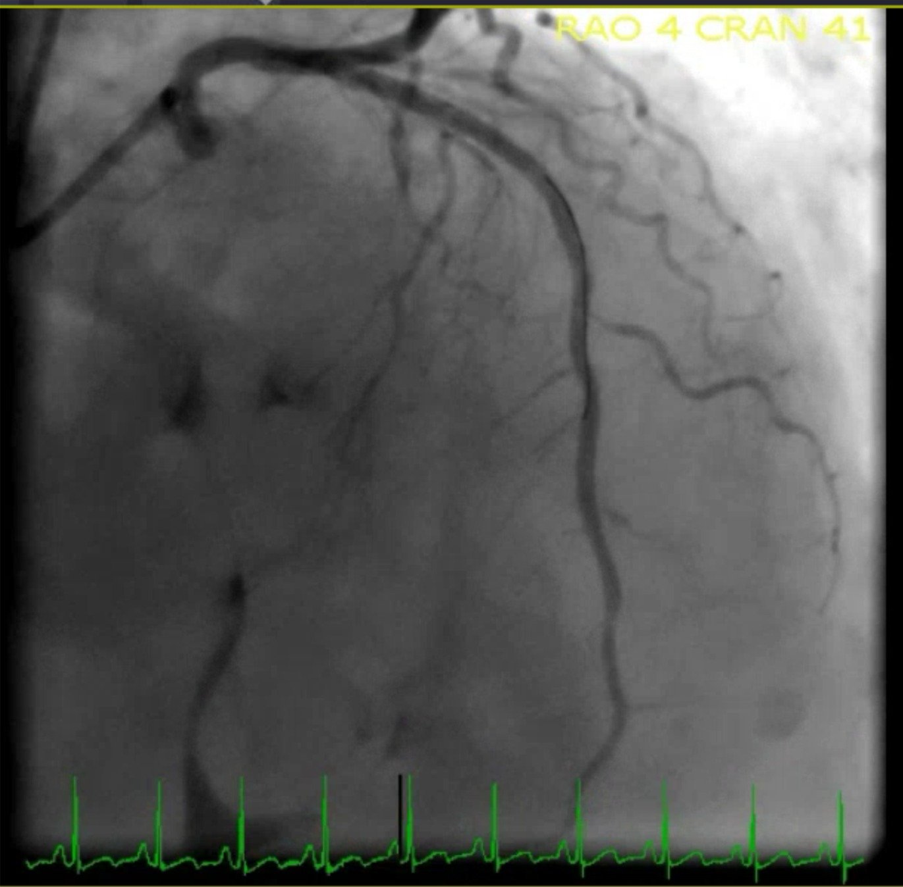
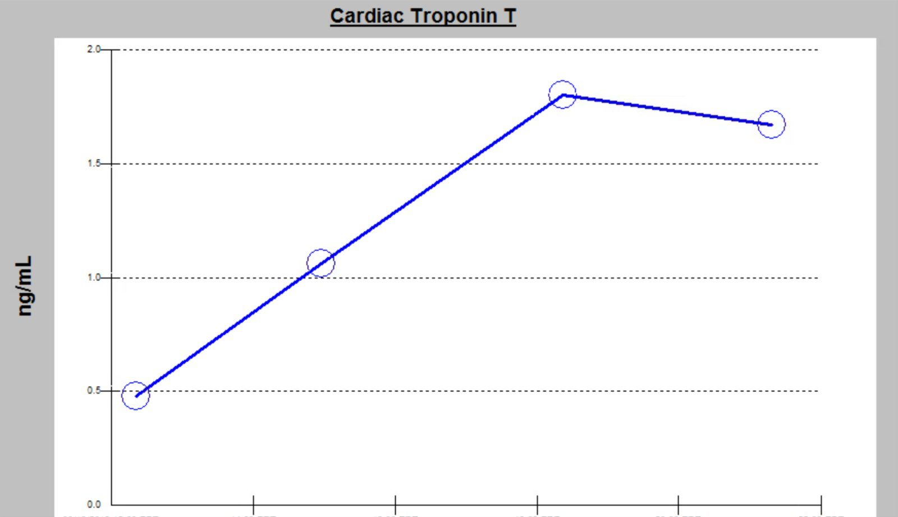
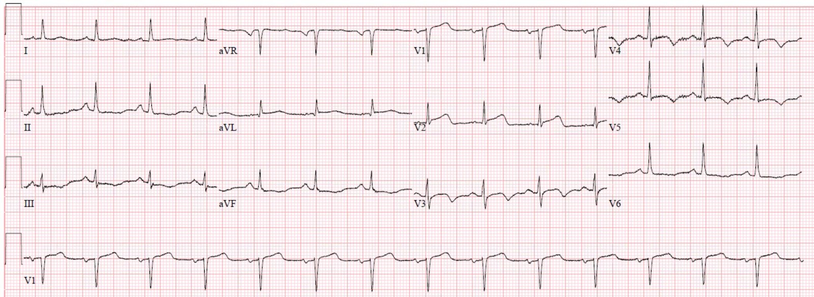
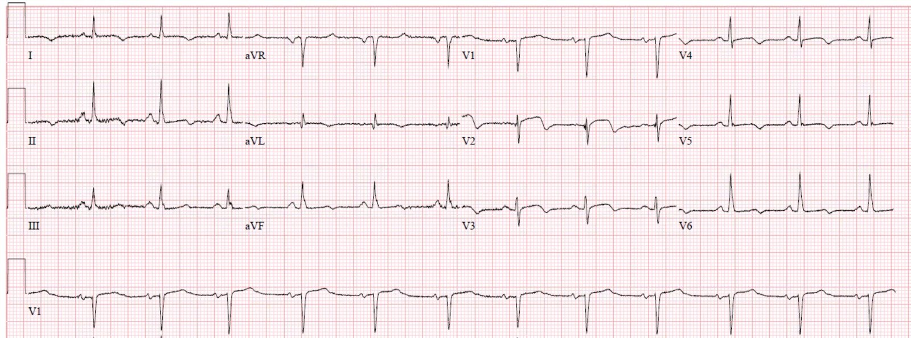
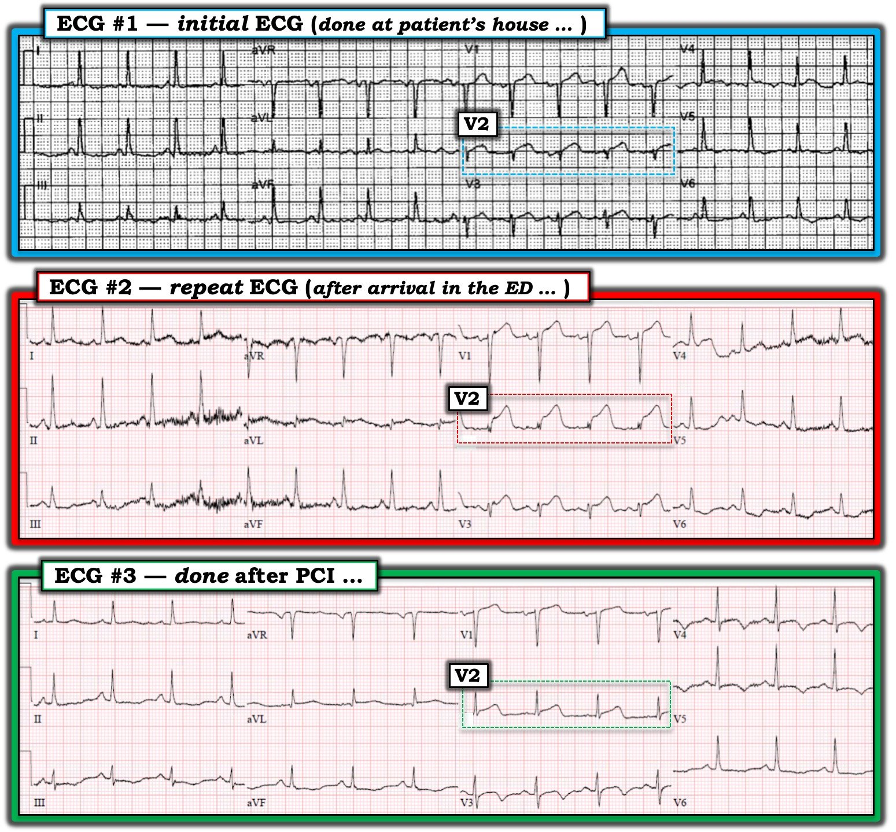

20/04/2019 — Bạn muốn chờ bao lâu để OMI của mình biểu hiện thành STEMI? Đôi khi các điện tâm đồ liên tiếp giúp giảm thiểu sự chậm trễ.
Bản dịch tiếng Việt của bài "How long would you like to wait for your Occlusion MI to show a STEMI? Sometimes serial ECGs minimizes the delay." – Dr. Smith’s ECG Blog. Giữ nguyên toàn bộ 10 hình ảnh của bản gốc.
Tác giả: Pendell Meyers
Một phụ nữ lớn tuổi đến viện vì đau ngực và khó thở khởi phát cấp tính.
Đội cấp cứu ngoài viện (EMS) cho chúng tôi xem điện tâm đồ họ ghi khi đến nhà bệnh nhân:


Nhịp xoang với ST chênh lên (STE) rất ít ở V1-V3, không đạt tiêu chuẩn STEMI. Tuy nhiên, STE này chắc chắn là bất thường trong bối cảnh phức bộ QRS hẹp và hình thái sóng T tối cấp ở V2. Có một chút STE ở V1 và ST chênh xuống (STD) soi gương ở V6 kèm sóng T âm.
Hình ảnh này kín đáo nhưng có giá trị chẩn đoán nhồi máu cơ tim do tắc (OMI) thành trước. V2 không bao giờ có hình dạng này nếu không có thiếu máu cục bộ xuyên thành. Sau này chúng tôi đặt ra thuật ngữ “xoáy trước tim (precordial swirl)” cho hình thái này.
Chúng tôi đã yêu cầu kích hoạt phòng thông tim cấp cứu.
Bác sĩ tim mạch đến nhanh và tỏ ra hoài nghi về các dấu hiệu này trên điện tâm đồ của EMS. Vì vậy, trong lúc họ đang cố giải thích cách diễn giải của mình, tôi chỉ đơn giản ghi thêm một điện tâm đồ khác:


Điều này đã chấm dứt cuộc tranh luận.




Troponin T đỉnh là 1.76 ng/mL.


Các điện tâm đồ ghi lại sau can thiệp phù hợp với tái tưới máu thành công, không hình thành sóng Q đáng kể:




Siêu âm tim giai đoạn hồi phục cho thấy EF 41% với rối loạn vận động thành trước, thành bên và vùng mỏm.
Do tái tưới máu tương đối nhanh và không có sóng QS, phần lớn bất thường trên siêu âm tim có thể hồi phục (choáng cơ tim, không phải nhồi máu).
Những điểm cần học:
Các điện tâm đồ liên tiếp đôi khi có thể biến một quyết định khó thành một quyết định rất dễ, nhưng không phải mọi OMI đều nhanh chóng tiến triển thành STEMI rõ ràng, và một số OMI sẽ không bao giờ biểu hiện STEMI. Khoảng trì hoãn giữa OMI và STEMI đôi khi gây mất cơ tim không thể chấp nhận được, hoặc tệ hơn.
Hãy chắc chắn khắc sâu hình thái chuyển đạo V2 trên điện tâm đồ ban đầu vào trí nhớ để có thể nhận ra hình ảnh này trong tương lai.
STE ở V1 kèm STD ở V6 khi phức bộ QRS bình thường là một bằng chứng khác phù hợp với tắc LAD.

===================================
Bình luận của KEN GRAUER, MD (20/4/2019):
===================================
Với ca này — Dr. Meyers đề cập một chủ đề thường gặp của ECG Blog này = Phải chờ BAO LÂU để điện tâm đồ OMI của bạn biểu hiện thành STEMI? Như chúng tôi đã nhấn mạnh trước đây, điều “bài học cần rút ra” quan trọng — là không cần phải chờ! Ngay khi có bằng chứng OMI cấp — cần gọi đồng nghiệp tim mạch để đẩy nhanh việc thông tim với mục tiêu tái tưới máu cấp.
- Cho rõ ràng — tôi đã đặt lại 3 điện tâm đồ đầu tiên của ca này trong Hình 1. Ngoài việc xem lại vì sao OMI cấp thực sự hiện rõ trên điện tâm đồ #1 ( = điện tâm đồ ban đầu của ca này, do EMS ghi khi đến nhà bệnh nhân) — tôi thấy việc quan sát liên tiếp hình dạng của chuyển đạo V2 trên 3 điện tâm đồ tuần tự này rất có ý nghĩa và quan trọng cần lưu ý!


=================
TẠI SAO Điện tâm đồ #1 Có giá trị chẩn đoán OMI Cấp (Cho đến khi Bạn Chứng minh Điều ngược lại … )
Dr. Meyers đã đúng khi báo cho bác sĩ tim mạch trực ngay khi anh ấy thấy điện tâm đồ #1 vì:
- 1) Bối cảnh lâm sàng thực sự đáng lo ngại ( = một phụ nữ lớn tuổi bị đau ngực mới khởi phát).
- 2) Với bệnh sử này — KHÔNG thể nào hình dạng điện tâm đồ của chuyển đạo V2 trên điện tâm đồ #1 là bình thường. So với biên độ QRS rất nhỏ ở chuyển đạo V2 — đoạn ST ở chuyển đạo này lớn không tương xứng, có hình vòm (tức là, dạng “mặt mếu”) kèm một ít ST chênh lên. Sóng ST-T ở chuyển đạo V2 của điện tâm đồ #1 rõ ràng là tối cấp.
Hình dạng các chuyển đạo khác trên điện tâm đồ #1 ít đáng chú ý hơn nhiều so với hình dạng của chuyển đạo V2. Sóng T ở các chuyển đạo lân cận V1 và V3 trông hơi nổi bật hơn mức đáng có so với biên độ QRS ở các chuyển đạo này — nhưng thay đổi này kín đáo, và còn xa mới đủ để chẩn đoán! (Trong 5 phức bộ QRS ở các chuyển đạo này — một số gợi ý ST chênh lên nhẹ ở V1 và V3 — nhưng số khác thì không). Ngoài ra, các chuyển đạo còn lại không có gì hơn sóng ST-T dẹt không đặc hiệu. Vì vậy — Chuyển đạo V2 là MẤU CHỐT để chẩn đoán trên điện tâm đồ #1. Về điểm này, tôi xin bổ sung các ý sau:
- Nên biết rằng với OMI cấp của nhánh chéo thứ 1 (hoặc thứ 2) của LAD — chuyển đạo ngực duy nhất có thể có ST chênh lên là V2. Có thể có ST chênh lên ít hơn ở aVL, kèm ST chênh xuống soi gương ở các chuyển đạo thành dưới — hoặc — ở giai đoạn sớm, điện tâm đồ có thể trông giống như những gì ta thấy ở điện tâm đồ #1.
- Mọi thứ có thể thay đổi rất nhanh trong quá trình một OMI cấp đang tiến triển (Xem CA NÀY — trong đó chỉ 8 phút trôi qua giữa điện tâm đồ thứ 1 và thứ 2). Vì vậy, ở giai đoạn sớm — OMI cấp của LAD có thể (và trong ca này, đã) trông giống điện tâm đồ #1.
- Tôi nghi ngờ một hoặc nhiều trong 3 chuyển đạo thành trước (V1,V2,V3) trên điện tâm đồ #1 bị đặt sai vị trí. Lý do khiến tôi nghi ngờ là tôi không nghĩ sóng S ở V2 lại giảm nhiều đến vậy so với chuyển đạo lân cận V1 — rồi sau đó lại trở nên sâu hơn đúng lúc sóng r cao lên, khi ta đi từ V2 sang V3. Ngoài ra, sự chuyển đổi hình dạng sóng ST-T từ đoạn ST dốc lên ở V1 — sang đoạn ST dạng vòm cong xuống ở V2 — rồi quay trở lại đoạn ST dốc lên ở V3, không phải kiểu tăng tiến sinh lý thông thường khi đi từ V1 sang V3.
=================
“Điều Cần Nhớ”: Theo Dr. Meyers — Việc dùng các điện tâm đồ liên tiếp thường xuyên có thể vô cùng giá trị cho đến khi bệnh cảnh lâm sàng được làm rõ.
- Đặt sai vị trí điện cực ngực thường gặp đến bất ngờ — ngay cả khi người ghi điện tâm đồ là các kỹ thuật viên điện tâm đồ giàu kinh nghiệm.
- Vì bác sĩ tim mạch trong ca này hoài nghi chẩn đoán OMI cấp từ điện tâm đồ #1 — tôi sẽ ngay lập tức ghi lại điện tâm đồ ngay khi thấy bản ghi ban đầu này vì: i) Có gợi ý một dạng đặt sai vị trí điện cực thành trước nào đó (Xem ở trên) — và, ghi lại điện tâm đồ ngay sau khi kiểm tra vị trí đặt điện cực có thể đã làm rõ tình trạng thật của các thay đổi ST-T cấp; và, ii) Với triệu chứng cấp tính của bệnh nhân này + gợi ý mạnh về thay đổi điện tâm đồ tối cấp ở V2 của điện tâm đồ #1 — hoàn toàn có khả năng bạn sẽ thấy ngay một số diễn tiến của thay đổi ST-T trong khoảng thời gian ngắn giữa lúc ghi điện tâm đồ #1 — và lúc ghi xong điện tâm đồ lặp lại. LƯU Ý: Lý do tôi đề nghị ghi lại điện tâm đồ ngay lập tức — là vì chúng ta đang cố đẩy nhanh việc thuyết phục bác sĩ tim mạch trong ca này đưa bệnh nhân đi thông tim càng sớm càng tốt.
- ĐIỂM THEN CHỐT (PEARL) #1: Có một cách dễ dàng để loại bỏ khả năng biến thiên vị trí đặt điện cực ngực khi ghi các bản ghi liên tiếp. Chỉ cần đánh dấu vị trí trên ngực nơi đặt điện cực trong những ca nghi ngờ đặt sai vị trí điện cực. Cách này sẽ bảo đảm tính nhất quán của vị trí đặt điện cực cho các bản ghi liên tiếp về sau.
- ĐIỂM THEN CHỐT (PEARL) #2: Cần biết rằng thay đổi GÓC nghiêng của giường bệnh nhân có thể làm thay đổi hình dạng QRS và sóng ST-T ở bất kỳ chuyển đạo nào. Yếu tố này thường bị bỏ qua (Bạn đã bao giờ thấy ghi chú trên điện tâm đồ rằng bệnh nhân quá khó thở nên không nằm thẳng được? — và do đó, giường của họ được nâng lên 30 độ [hoặc lên bất kỳ góc nào mà giường đã được nâng … ] vào lúc ghi điện tâm đồ).
Bình luận về Sự Biến Thiên của Chuyển đạo V2 trong 3 Điện tâm đồ ở Hình 1:
Dr. Meyers đã bàn luận rất thấu đáo về diễn tiến của các điện tâm đồ liên tiếp trong ca này — rồi đối chiếu với kết quả thông tim. Tôi muốn tập trung vào hình dạng thay đổi của phức bộ QRS ở chuyển đạo V2 trên các điện tâm đồ #1, #2 và #3 (Hình 1):
- Nhiều khả năng mỗi điện tâm đồ trong 3 điện tâm đồ ở Hình 1 do một kỹ thuật viên khác nhau ghi — vì đã dùng hơn một máy điện tâm đồ (đường lưới đen so với đỏ), và 3 bản ghi được ghi ở những địa điểm khác nhau (tức là, nhà bệnh nhân; khoa cấp cứu (ED); và phòng thông tim). Đặt sai vị trí điện cực trở nên dễ xảy ra hơn nhiều khi một người khác ghi các bản ghi lặp lại.
- Tôi đã mô tả vì sao tôi cho rằng nhiều khả năng có đặt sai vị trí điện cực ở điện tâm đồ #1.
- Đặt sai vị trí điện cực gần như chắc chắn ở điện tâm đồ #3. Đơn giản là ta sẽ không mong đợi một sự tăng tiến từ QRS âm ưu thế ở V1 — sang dương ưu thế ở V2 — rồi sang phức bộ QRS đẳng pha ở V3.
- Và lại thêm một hình thái QRS khác nữa ở V2 của điện tâm đồ #2 — trong đó phức bộ QRS có nhiều pha, tổng gần như đẳng pha (null).
- Biết rằng bệnh nhân này vừa trải qua thủ thuật PCI — tôi không nghĩ sự khác biệt rõ rệt về hình thái QRS ở V2 qua 3 bản ghi này là do tái tưới máu mạch vành. Nhất là khi hình thái QRS ở các chuyển đạo ngực thành bên (V4, V5 và V6) khá nhất quán qua 3 bản ghi này — tôi cho rằng gần như chắc chắn đã có đặt sai vị trí điện cực (ít nhất là ở V2) trong ít nhất một hoặc hai trong 3 bản ghi này.
- ĐIỀU CỐT LÕI: Theo Dr. Meyers — “Các điện tâm đồ liên tiếp” đôi khi có thể biến một quyết định khó (về việc có kích hoạt phòng thông tim cấp hay không) thành một quyết định rất dễ. Nhận thức được đặt sai vị trí điện cực ngực thường gặp đến mức nào — và, hiểu được khi nào cần nghi ngờ đặt sai vị trí điện cực — có thể thúc đẩy việc ghi lại điện tâm đồ sớm hơn, giúp bạn nhanh chóng thuyết phục được một bác sĩ tim mạch còn do dự về nhu cầu thông tim ngay lập tức.